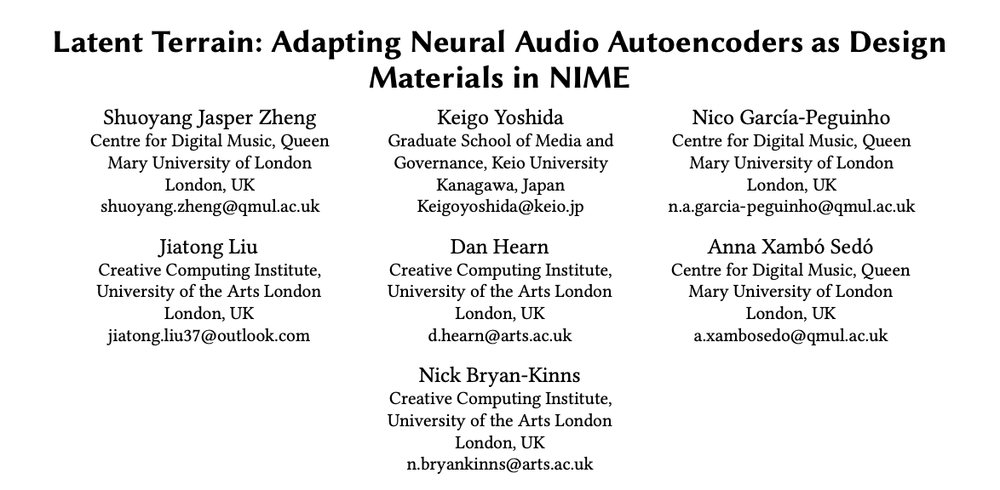

Paper published on NIME 2026
Latent Terrain: Adapting Neural Audio Autoencoders as Design
Materials in NIME

| Publication: Latent Terrain: Adapting Neural Audio Autoencoders as Design Materials in NIME Proceedings of the International Conference on New Interfaces for Musical Expression (NIME 2026) June 23-26, 2026 / London, UK Authors: Shuoyang Jasper Zheng, Keigo Yoshida, Nico García-Peguinho, Jiatong Liu, Dan Hearn, Anna Xambó Sedó, and Nick Bryan-Kinns About the Research: This paper introduces Latent Terrain (nn.terrain~), a Max/MSP package that adapts the high-dimensional latent spaces of neural audio autoencoders into low-dimensional, corpus-based sound spaces for new musical interfaces. It maps user-defined spatial trajectories to audio latent trajectories, allowing musicians and designers to navigate complex generative sound spaces through accessible controls. The package also provides tools for interactive trajectory plotting, real-time latent recording, and trajectory playback. The technical method uses Fourier-feature mapping to preserve rapid changes in latent trajectories that standard multilayer perceptrons tend to smooth out. Evaluation across four neural audio autoencoders showed improved mapping accuracy, while the additional mapping model introduced only minimal overhead during real-time synthesis. Keigo Yoshida's Contribution: As the second author and one of four collaborating artist-researchers, Keigo Yoshida co-developed "Repressive Terrain" with Shuoyang Jasper Zheng. The work is a Max/MSP data-sonification patch that uses an OpenBCI EEG headset, a RAVE autoencoder, and samples of vintage music to transform time-varying brain activity into a continuously evolving soundscape. Its artistic concept creates an adversarial tension between an audience member striving for calm during focused meditation and an algorithm producing arousing sonic responses. The biofeedback system continually retrains and adapts the latent sound space, treating the AI not as a fully controllable tool but as a resistant creative material whose uncertainty becomes a compositional driver. Through an annotated portfolio of four artistic projects, the paper argues that neural audio autoencoders become meaningful design materials through sustained, practice-based engagement and the sharing of techniques between artistic and technical communities. |